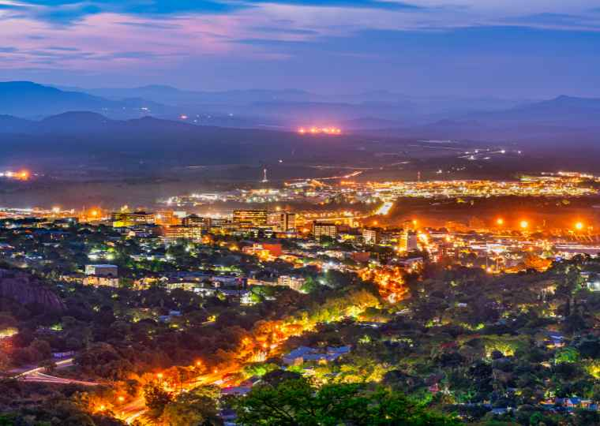

Which City?
Mbombela is the capital city of the Mpumalanga Province. It’s a gateway to Kruger National Park, home to elephants, zebras, rhinos and other wildlife. The city’s Lowveld National Botanical Garden features a man-made rainforest. Northwest are the prehistoric Sudwala Caves, with unusual rock formations. South, Umhloti Nature Reserve contains the Jane Goodall Institute’s Chimp Eden sanctuary. I love nature and I believe it would be great to visit Mbombela and see all the streams and valleys. Get to see most of the wild animals on a free-range. I visited the city when I was young and can barely remember anything.
